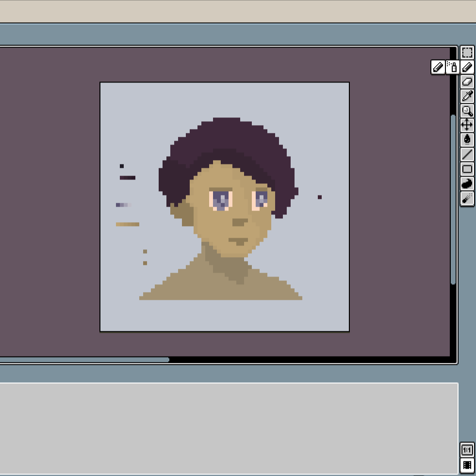

Hey there! I’m a graduate student studying bioinformatics at Boston University, combining my background in computer science and data science with my passion for biological research. I've been a research assistant, hackathon organizer, machine learning specialist, and I'm currently a software engineer. My work often involves creating machine learning models to analyze metabolic & agricultural datasets or designing tools that make complex data manageable & human-readable.
I enjoy working on projects that require a mix of technical precision and creative thinking, whether it’s automating workflows, building compelling web interfaces, or deploying scalable applications on platforms like AWS. I'm currently working at ADViRNA to virtualize and convert their in-house software to a scalable SaaS platform.
When I’m not working, you’ll probably find me experimenting with side projects, designing 8-bit games, improving my web development skills, or reading. I’m always open to new ideas and collaborations, so feel free to reach out if something sparks your interest!
